Reservas de carpas, sombrillas, estacionamiento y pileta, servicios incluidos, cobros, clientes, reportes y tarifas.
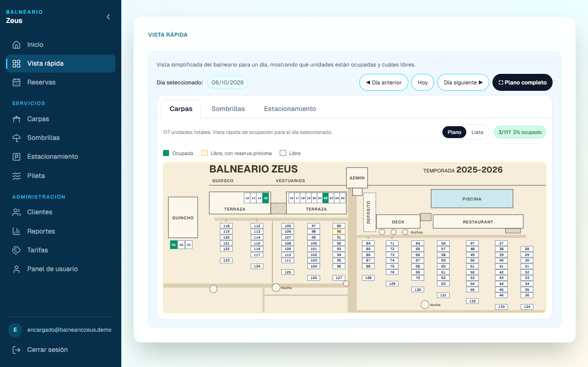
Cada capítulo explica una parte del sistema con capturas de la pantalla real. Los nombres de botones y campos aparecen en negrita, tal como se ven en la pantalla.
Si recién empezás, leé en orden los capítulos 1 a 6: con eso ya podés atender el teléfono y el mostrador. Antes de la temporada, leé el capítulo 12 para cargar los precios.
El sistema funciona en el navegador (Chrome, Edge o Firefox), en la computadora o en el celular. No hay que instalar nada.
Abrí la dirección del sistema en el navegador, escribí tu Email y tu Contraseña y tocá Ingresar.
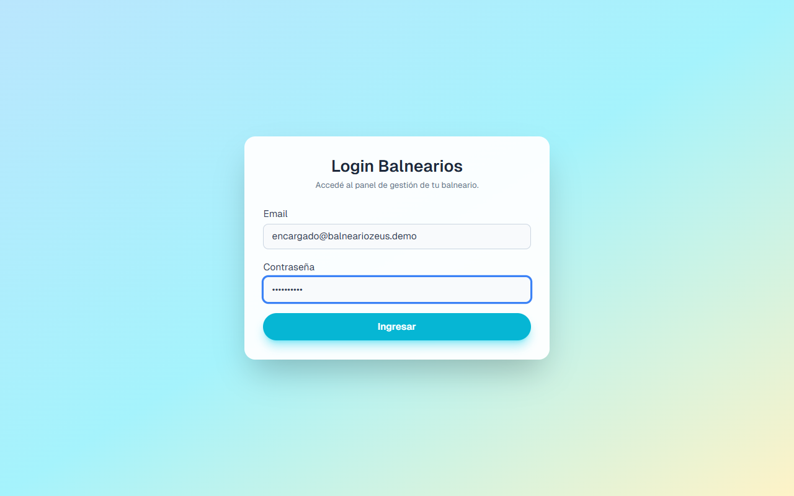
Por seguridad, la sesión se cierra sola una hora después de entrar. El sistema vuelve a la pantalla de ingreso con el aviso “Tu sesión venció. Volvé a iniciar sesión.” Volvé a entrar y seguí donde estabas.
Si estabas cargando una reserva cuando venció la sesión, esa reserva no se guardó. Volvé a cargarla.
Para salir antes, usá Cerrar sesión, abajo de todo en el menú. Hacelo siempre si la computadora la usan otras personas.
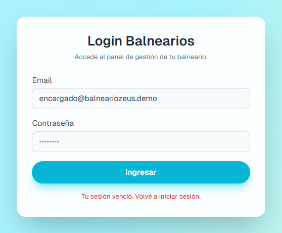
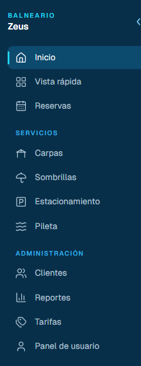
El menú de la izquierda está siempre a mano. En el celular se abre con el botón de las tres rayas.
| Sección | Para qué sirve |
|---|---|
| Inicio | Resumen del día: reservas en curso, ingresos, ocupación. |
| Vista rápida | El plano del balneario con lo ocupado de un día. |
| Reservas | Listado de todas las reservas, con filtros. |
| Carpas, Sombrillas, Estacionamiento | Calendarios de ocupación para reservar. |
| Pileta | Pases a la pileta: los incluidos en las carpas y los que se venden aparte. |
| Clientes | Fichas de clientes y deudas. |
| Reportes | Cobros y ocupación por fechas. |
| Tarifas | Temporadas, sectores y precios. |
| Panel de usuario | Tu email, tu contraseña, los datos del balneario y las reglas de las reservas. |
Es lo primero que ves al entrar. Arriba, los números del día: Activas hoy (reservas en curso), Ingresos (lo cobrado), Clientes y Ocupación. Abajo, cuánto está ocupado cada servicio, las últimas reservas, los últimos pagos y las llegadas de los próximos 7 días.
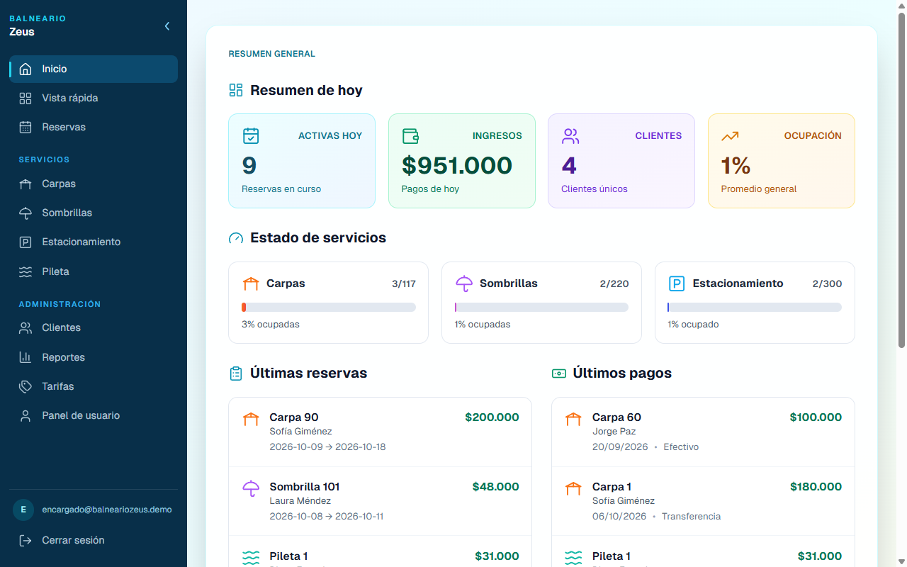
Cuando guardás algo o hay algo para revisar, aparece un aviso arriba a la derecha de la pantalla. Los avisos de que algo salió bien se van solos; los que piden revisar algo quedan hasta que los cerrás con la ×.
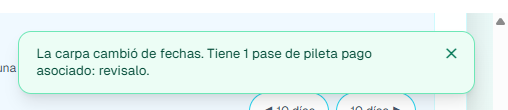
La Vista rápida muestra el plano del balneario con cada carpa y sombrilla pintada según su estado en el día elegido. Es la pantalla ideal para tener abierta en el mostrador.
| Color | Qué significa |
|---|---|
| Verde | Ocupada ese día. |
| Amarillo | Libre ese día, pero tiene una reserva que empieza pronto. |
| Blanco | Libre. |
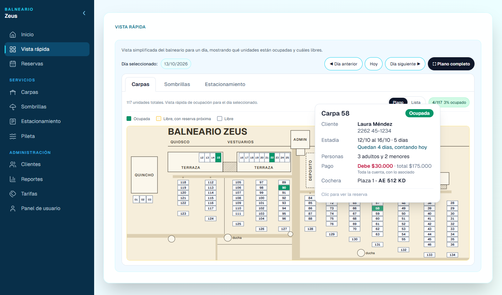
Al pasar el mouse por una carpa o sombrilla aparece al instante su ficha: Cliente y teléfono, Estadía (fechas y cuántos días le quedan), Personas, Pago y Cochera (plaza y patente, si tiene).
El Pago es el de toda la cuenta: la carpa más lo que tiene asociado (cocheras y pases de pileta pagos). Por eso dice “Toda la cuenta, con lo asociado”. En el ejemplo, Laura debe $30.000 de un total de $175.000.
Un clic en una unidad ocupada abre la reserva. Un clic en una unidad libre empieza una reserva nueva para ese día.
El botón Plano completo cubre toda la pantalla con el balneario entero: carpas, sombrillas, terrazas, pileta y servicios. Sirve para dar una vista general, por ejemplo cuando un cliente pregunta dónde está su carpa. Se cierra con Cerrar plano o con la tecla Esc.
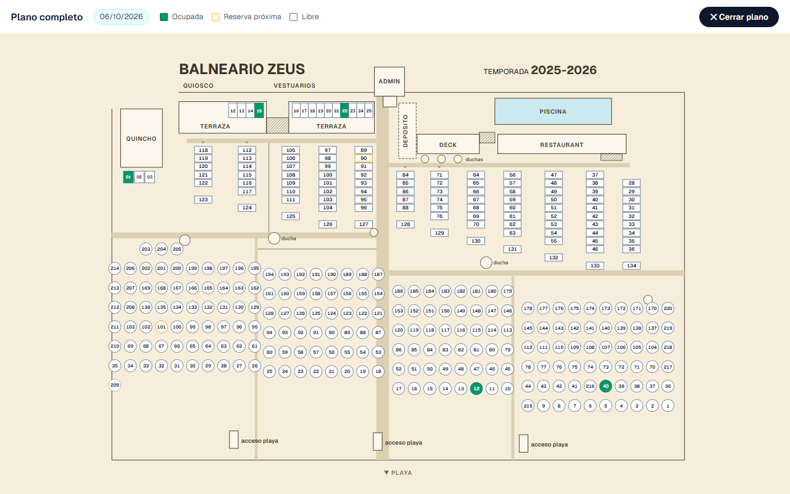
Llama Laura Méndez: quiere una carpa del 12 al 16 de octubre. Vienen 5 personas: ella, Pablo, Mateo (16 años), Juana (12 años) y su mamá Marta (68 años). Viene en auto.
La carpa trae 4 pases de pileta: van para Laura, Pablo, Mateo y Juana. Marta también quiere pileta, así que le vendemos un pase pago. Laura deja una seña de $50.000 en efectivo.
Entrá a Carpas en el menú. Cada fila es una carpa y cada columna un día. Los días ocupados tienen color y el nombre del cliente; los blancos están libres. Con ◀ 10 días y 10 días ▶ te movés en el calendario.
Apretá sobre el día de entrada en la fila de la carpa elegida y, sin soltar, arrastrá hasta el día de salida. Mientras arrastrás, el tramo se pinta y un cartelito dice cuántos días son. Al soltar se abre el formulario con las fechas ya cargadas.
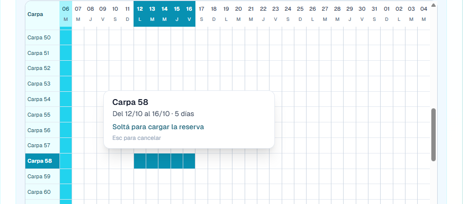
Si el tramo pasa por un día ocupado, se pinta de rojo y al soltar no deja cargar: elegí otra carpa u otras fechas. Si te equivocaste mientras arrastrás, apretá Esc para cancelar. También podés hacer un clic en un día libre: se abre el formulario con esa fecha de entrada y completás la de salida a mano.
En Buscar cliente guardado escribí parte del nombre, el teléfono o el DNI y elegilo de la lista: se completan solos el nombre, el teléfono y la patente.
Si es la primera vez que viene, tocá + Nuevo cliente: se abre la ficha de cliente, la completás y al guardarla queda elegida en la reserva.
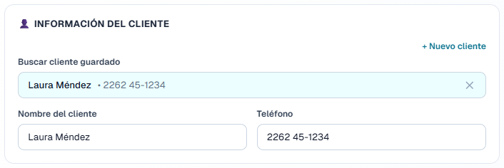
Para incluir pileta o cochera, la reserva tiene que tener un cliente guardado. Si solo escribís un nombre, el sistema avisa: “Para incluir pileta o cochera, elegí un cliente o creá uno nuevo.”
Revisá las Fechas de estadía: se pueden corregir acá, y debajo se ve cuántos días son. En Personas cargá cuántos Adultos y cuántos Menores van. El máximo es de 6 personas por carpa o sombrilla, contando al titular.
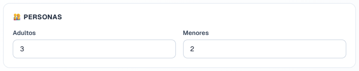
Al cargar la cantidad aparece Datos de las personas, con una fila por persona. La primera es el Titular (el cliente): completá su DNI y su Fecha de nacimiento, que quedan guardados en su ficha. Para cada acompañante, escribí Nombre, DNI y Edad.
A la derecha de cada fila hay dos botones:
Si marcás algún pase pago, aparece abajo dónde poner el precio por día de Adulto y de Menor. Menor es quien tiene menos de 18 años.
Los datos son opcionales: lo que falte se completa después desde el detalle de la reserva. Pero para dar un pase de pileta hacen falta el DNI y la edad de esa persona.
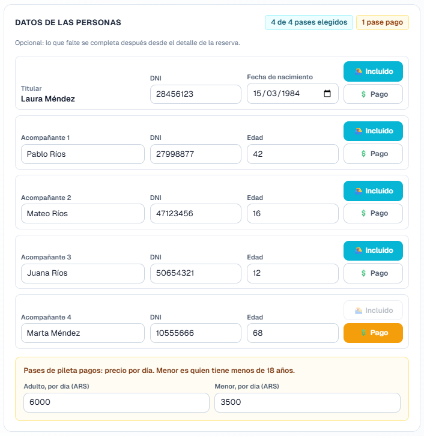
Los acompañantes quedan guardados solo en esta reserva, no en la ficha del cliente. Si Laura vuelve otro fin de semana con otra gente, se cargan de nuevo. Lo único que pasa a la ficha son el DNI y la fecha de nacimiento del titular.
El sistema calcula solo el precio con las tarifas cargadas y muestra el detalle: cuántos días de cada temporada y a qué precio. El Total cobrado ya viene con el precio de la tarifa. Se explica en detalle en el capítulo 5.
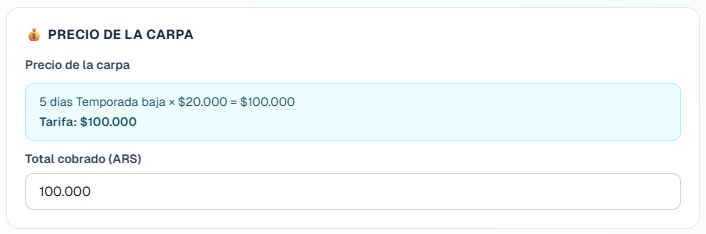
La casilla Incluye pileta viene marcada en las carpas: el precio de la carpa incluye 4 pases de pileta. Si el cliente no los quiere, desmarcala. Las sombrillas no traen pileta incluida, pero se les puede vender pases pagos.
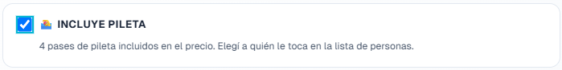
Si el cliente viene en auto, tildá Incluir estacionamiento. Podés elegir la plaza en la lista, o dejarla vacía y el sistema asigna la primera libre en esas fechas (lo avisa: “Se asigna la plaza 1.”).
La Patente del vehículo es obligatoria. Escribila como te la digan: el sistema la pasa a mayúsculas. Si el cliente ya tenía una patente en su ficha, aparece sola.
La cochera tiene su propio precio, calculado con las tarifas de estacionamiento. Si viene con dos autos, tocá + Agregar otra cochera.
La cochera queda incluida en la carpa: si después cambiás las fechas de la carpa, la cochera se mueve con ella; si la cancelás, se cancela también.
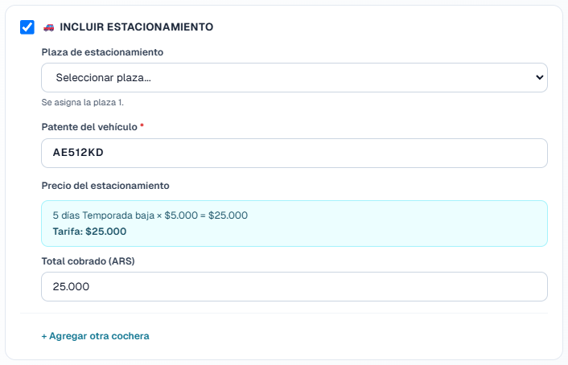
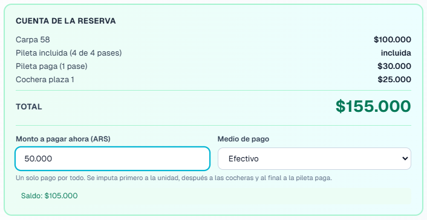
Al final del formulario está la Cuenta de la reserva: cada cosa con su precio (la carpa, la pileta incluida, la pileta paga y cada cochera) y el Total.
El cliente paga todo junto. Si deja una seña, cargala en Monto a pagar ahora y elegí el Medio de pago. Debajo se ve el saldo que queda.
Ese único pago se reparte solo: primero cubre la carpa, después las cocheras y al final la pileta paga. No hace falta hacer nada más.
Tocá Guardar reserva. La reserva aparece en el calendario con el nombre del cliente, y en la Vista rápida la carpa se pinta de verde esos días. La cochera y los pases de pileta quedan cargados al mismo tiempo.
Si el sistema no deja guardar, revisá lo que marca en rojo: la patente de la cochera, el motivo de un ajuste de precio, una seña mayor que el total, más de 6 personas, o una unidad que ya está ocupada en esas fechas.
Las sombrillas se reservan igual, desde Sombrillas. La diferencia es que no traen pases de pileta incluidos: en cada persona aparece solo el botón 💲 Pago, por si alguien quiere pileta. Pueden llevar cochera igual que una carpa.
El precio lo calcula el sistema con las tarifas del capítulo 12, día por día. Si una estadía cruza de una temporada a otra, cada día se cobra al precio de su temporada, y el detalle lo muestra por tramos (por ejemplo: “3 días Temporada baja × $20.000 + 3 días Temporada alta × $45.000”).
Si la estadía entra en una tarifa por estadía (una quincena, la media temporada o la temporada completa), se cobra esa tarifa en lugar de sumar los días.
Podés cambiar el Total cobrado, por ejemplo por un descuento a un cliente de años o un redondeo. En ese caso el sistema muestra la diferencia y pide el Motivo del ajuste, que es obligatorio.
La reserva guarda el precio de la tarifa, lo cobrado y el motivo. Así el dueño puede ver después cada descuento hecho.
Lo mismo vale para la cochera: tiene su propio Total cobrado y, si lo cambiás, su propio motivo.
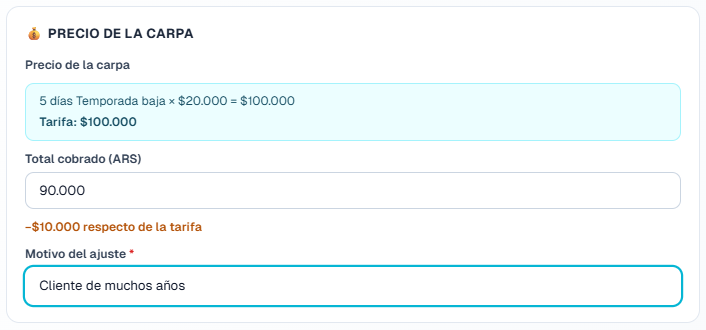
Si faltan tarifas para algunos días, el recuadro avisa en amarillo: “Consultar precio: faltan tarifas para el 14/03 y 15/03. Cargá el total a mano o completá los precios en Tarifas → Precios.” Si el servicio no tiene ninguna tarifa, avisa: “No hay tarifas cargadas para el estacionamiento…”.
En los dos casos podés escribir el total a mano y guardar igual, sin motivo. Para que no vuelva a pasar, completá los precios en Tarifas.
El precio de los pases de pileta pagos se escribe en cada reserva (precio por día de adulto y de menor). El sistema multiplica por la cantidad de personas y de días.
Si después cambiás una tarifa, las reservas ya hechas no cambian de precio. Solo se recalcula una reserva si le cambiás las fechas o la unidad.
Una reserva se abre con un clic sobre ella en el calendario, en la Vista rápida o con el botón ⓘ del listado de Reservas.
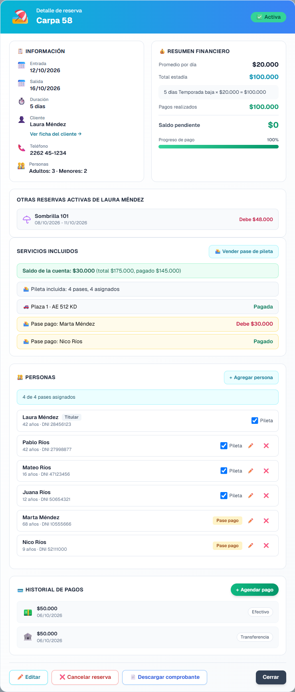
El detalle tiene, de arriba hacia abajo:
El Resumen financiero muestra solo la carpa. Lo que debe el cliente en total está en Saldo de la cuenta, dentro de Servicios incluidos.
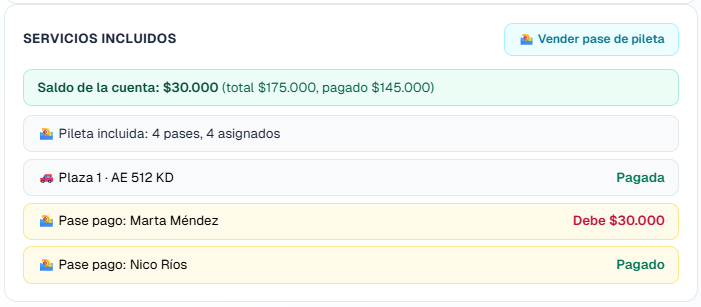
Un clic en una cochera o un pase abre su propia reserva. Desde ahí, Ir a la reserva te trae de vuelta a la carpa.
En Personas está la lista de quienes vienen, con el titular primero. Con + Agregar persona sumás a alguien, con el lápiz corregís sus datos y con la cruz lo sacás. El tope es de 6 personas contando al titular.
La casilla Pileta de cada persona le da o le saca uno de los pases incluidos. Arriba se ve cuántos están asignados (“4 de 4 pases asignados”). Quien no tiene DNI o edad cargados no se puede tildar: el sistema pide “Completá DNI y edad”.
Quien tiene un pase vendido aparte muestra Pase pago en lugar de la casilla.
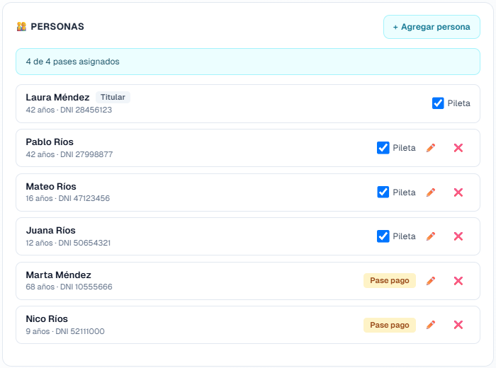
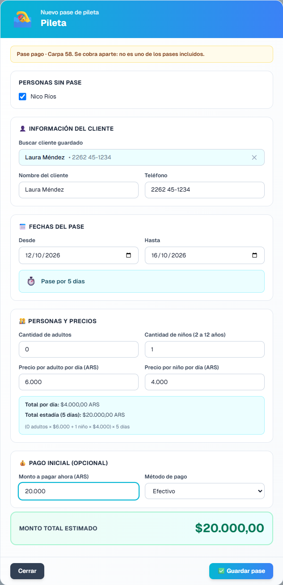
Si alguien de la carpa quiere pileta y ya no quedan pases incluidos, tocá Vender pase de pileta en Servicios incluidos.
Arriba, en Personas sin pase, tildá a quién es: el sistema completa solo cuántos adultos y niños son. El cliente y las fechas ya vienen de la carpa.
Escribí el Precio por adulto por día y el Precio por niño por día; el total se calcula solo. Si paga en el momento, cargá el Pago inicial.
Al tocar Guardar pase (o Cerrar) volvés al detalle de la carpa, con el pase nuevo en la cuenta.
El pase pago se cobra aparte: no es uno de los incluidos y no se mueve solo si la carpa cambia de fechas. Si la movés, el sistema avisa que lo revises.
En Historial de pagos tocá + Agendar pago. Si la carpa tiene cosas asociadas, el pago es de toda la cuenta: el formulario muestra el total de la cuenta, lo ya pagado y el Saldo de la cuenta, y el monto viene con ese saldo.
Completá el Monto del pago, la Fecha del pago y el Método de pago, y tocá Guardar pago. Volvés al detalle con el saldo actualizado.
Como en la seña, el pago se reparte solo en orden: la carpa, las cocheras y la pileta paga.
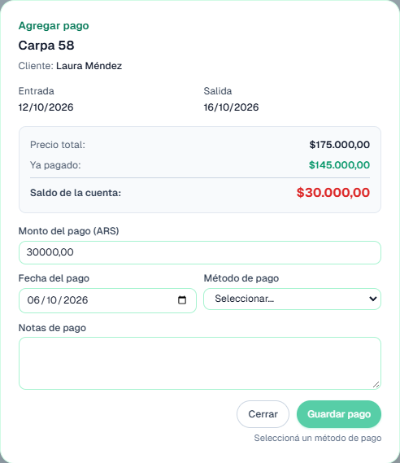
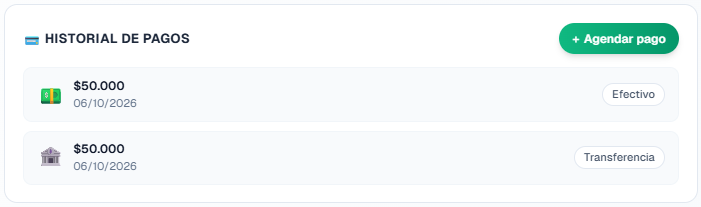
El Historial de pagos del detalle muestra la parte de cada pago que le tocó a la carpa. Si un pago cubrió también la cochera, esa parte aparece en la cochera. El comprobante, en cambio, muestra cada pago entero.
Descargar comprobante genera un PDF para darle al cliente. Es el comprobante de toda la cuenta: la carpa, la pileta incluida con los nombres, cada cochera, cada pase pago, el Total de la cuenta, cada pago como lo hizo el cliente y el saldo.
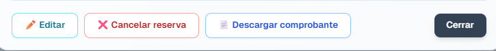
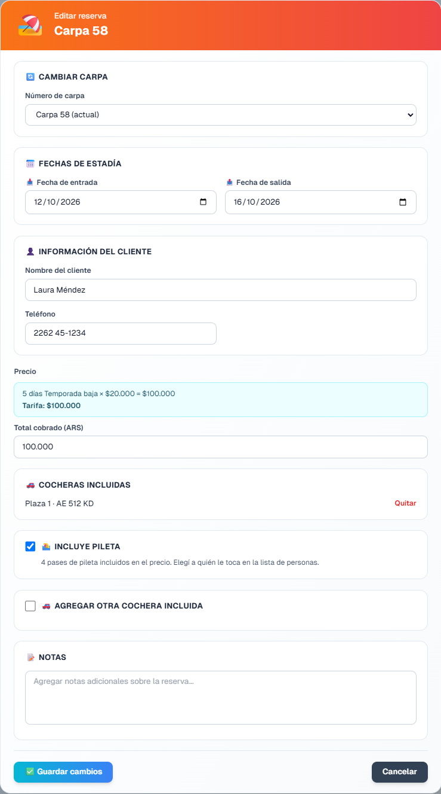
Desde Editar podés cambiar la unidad (Número de carpa), las fechas, el nombre y teléfono del cliente, el total cobrado y las notas.
Acá también se manejan los servicios incluidos:
Cuando cambiás las fechas de la carpa, la pileta incluida y las cocheras se mueven con ella. Los pases pagos no se mueven: el sistema avisa para que los revises.
Tocá Guardar cambios para confirmar o Cancelar para salir sin cambiar nada. En los dos casos volvés al detalle de la reserva.
El pase de pileta incluido y la cochera incluida no se editan por su cuenta: se cambian desde la carpa. Si abrís uno de ellos y querés cambiarlo, tocá Ir a la reserva para volver a la carpa.
Cancelar reserva pide confirmación y libera la unidad. La reserva queda en el historial como cancelada. Si es una carpa con pileta incluida o cocheras incluidas, esas también se cancelan. Los pases pagos quedan como están, para que decidas qué hacer con ellos.
En Reservas están todas las reservas del balneario en una tabla. Se puede filtrar por:
Limpiar filtros vuelve a mostrar todo. En cada fila, el botón ⓘ abre el detalle y el botón verde registra un pago. La columna Pagos muestra lo pagado: en verde si está pagada y en rojo si debe.
La pileta incluida y las cocheras de una carpa aparecen como filas propias, con las mismas fechas que la carpa.
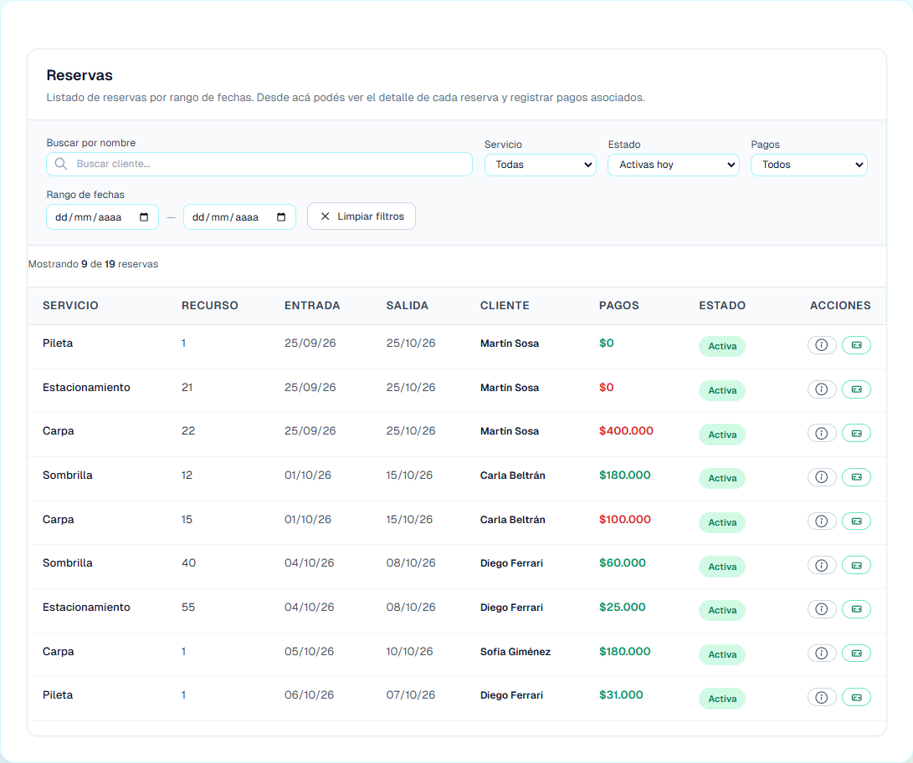
En Clientes está la base de clientes: nombre, DNI, teléfono, email, dirección y datos del vehículo. Con Nuevo Cliente se carga uno; con Ver, Editar y Eliminar se maneja cada ficha.
El buscador encuentra por nombre, teléfono, email, documento o patente. La casilla Solo con deuda de reservas terminadas muestra a quienes se fueron sin pagar todo, con el monto en rojo (“Debe $120.000”).
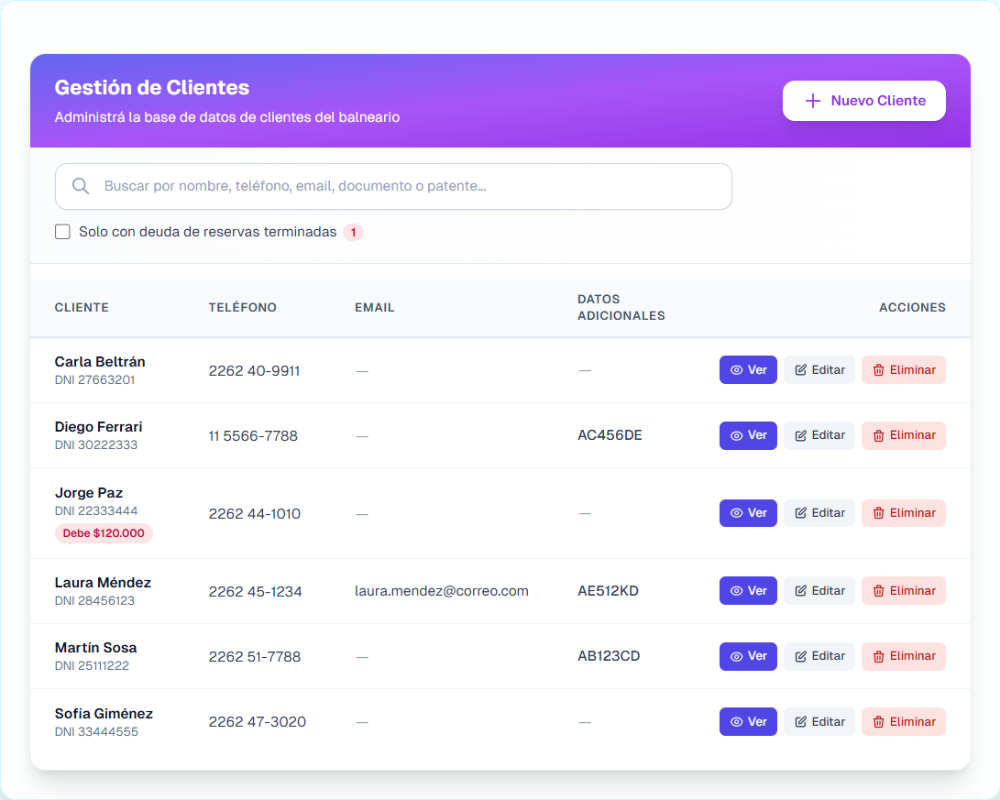
Ver abre la ficha: datos personales, contacto, vehículo y el Historial de reservas con el total reservado, lo pagado y el saldo pendiente.
Debajo están todas sus reservas (la carpa, la cochera y cada pase de pileta por separado) y la lista de Pagos, cada uno con la fecha, la unidad y el medio de pago.
Un clic en una reserva de la lista la abre.
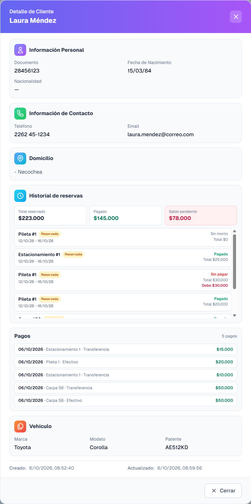
En Estacionamiento está el calendario de las plazas: cada fila es una plaza y cada columna un día, igual que en Carpas. Muestra todas las reservas de estacionamiento, también las cocheras incluidas en una carpa.
Para reservar una cochera suelta (sin carpa), hacé un clic en el día de entrada sobre la fila de la plaza: se abre el formulario con esa fecha y completás la de salida. La patente es obligatoria. Un clic sobre un día ocupado abre esa reserva.
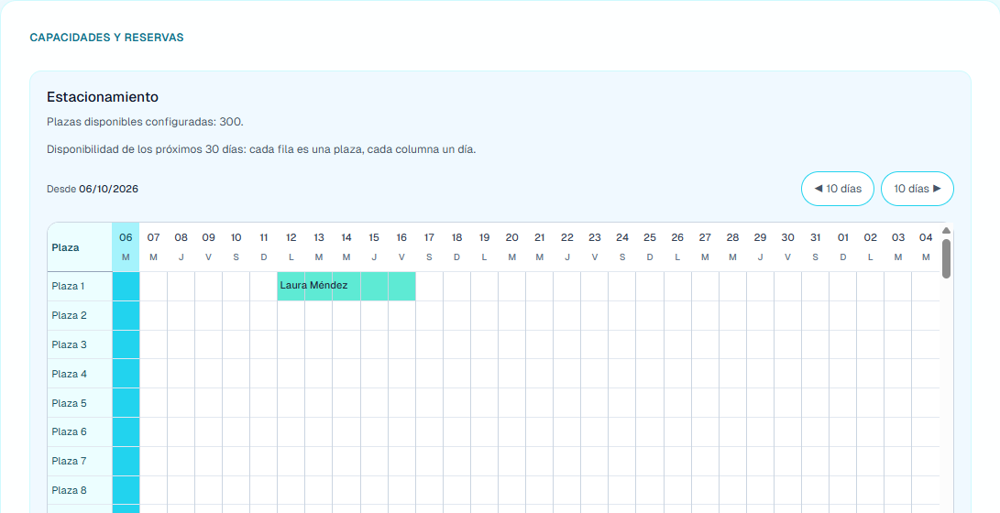
La patente va en cada reserva, no solo en la ficha del cliente: el mismo cliente puede venir con otro auto. La ficha solo sirve para que se complete sola.
En Pileta están todos los pases a la pileta. Arriba se ve la Ocupación actual (personas con pase hoy sobre el máximo permitido), el porcentaje y el día de referencia.
Hay tres clases de pases, y cada uno lo dice debajo del nombre del cliente:
| Cómo aparece | Qué es |
|---|---|
| Incluido en Carpa 58 | Los pases que trae la carpa, con los nombres de quienes los tienen. No se cobran aparte. |
| Pase pago · Carpa 58 | Un pase vendido a alguien de esa carpa, que se suma a su cuenta. |
| (sin etiqueta) | Un pase suelto, para alguien que viene solo a la pileta. |
Con Nuevo Pase vendés un pase suelto: elegís el cliente (obligatorio), las fechas, cuántos adultos y niños, y el precio por adulto y por niño por día. El sistema calcula el total. Ver Detalle abre el pase para cobrarlo o editarlo.
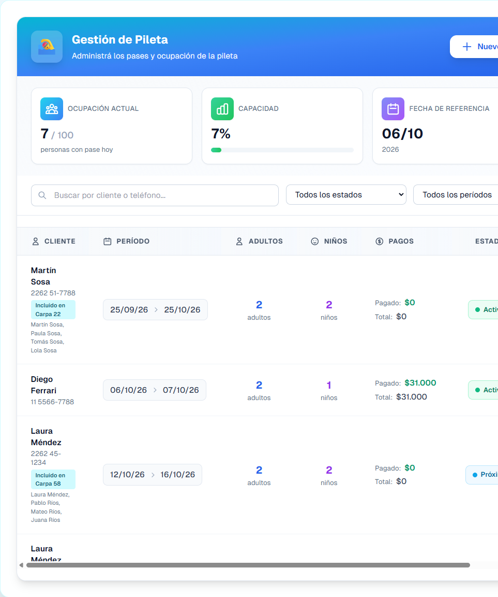
La pileta no usa las tarifas del capítulo 12: el precio por persona se carga en cada pase.
En Reportes hay dos vistas, Pagos y Ocupación. En las dos elegís el rango de fechas con Desde y Hasta, y podés filtrar por servicio.
Muestra el Total cobrado en el período, los Días con pagos y la Cantidad de pagos, con el total de cada día y el detalle de cada pago debajo. Se puede filtrar por Método de pago (por ejemplo, solo efectivo para hacer la caja). Exportar a Excel baja el listado.
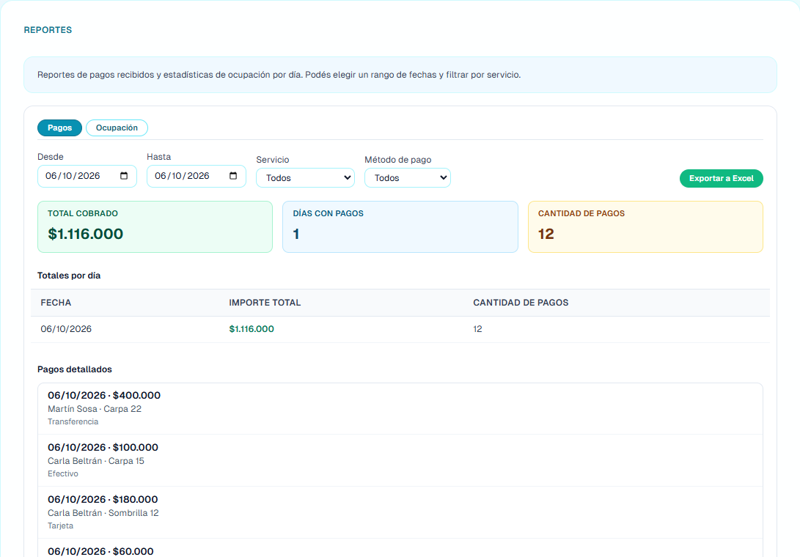
Un pago de la cuenta que cubrió la carpa y la cochera aparece en el reporte en dos renglones, uno por cada una. Así el total por servicio (carpas, estacionamiento, pileta) da bien.
Muestra, por servicio, la ocupación promedio y el día de más ocupación, y debajo la ocupación de cada día.
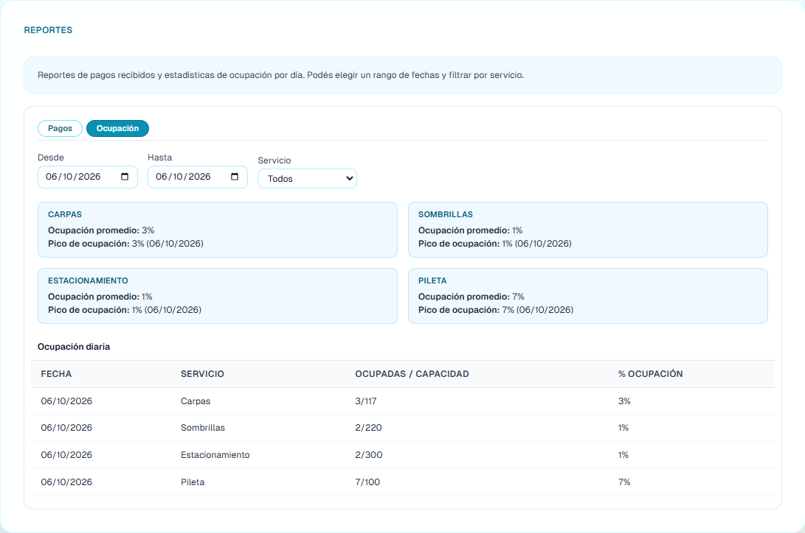
En Tarifas se cargan los precios que el sistema usa para calcular cada reserva de carpa, sombrilla y estacionamiento. Se carga una vez y sirve para todas las temporadas: las fechas no tienen año. Hay tres pestañas, que conviene completar en orden: Períodos, Sectores y Precios.
Un período es un tramo del año con precio propio: “Temporada alta” del 15/12 al 15/03, “Temporada baja” del 16/03 al 14/12. Para cargarlo, escribí el Nombre del período, Desde y Hasta como día/mes (15/12), y la Prioridad, y tocá Agregar período.
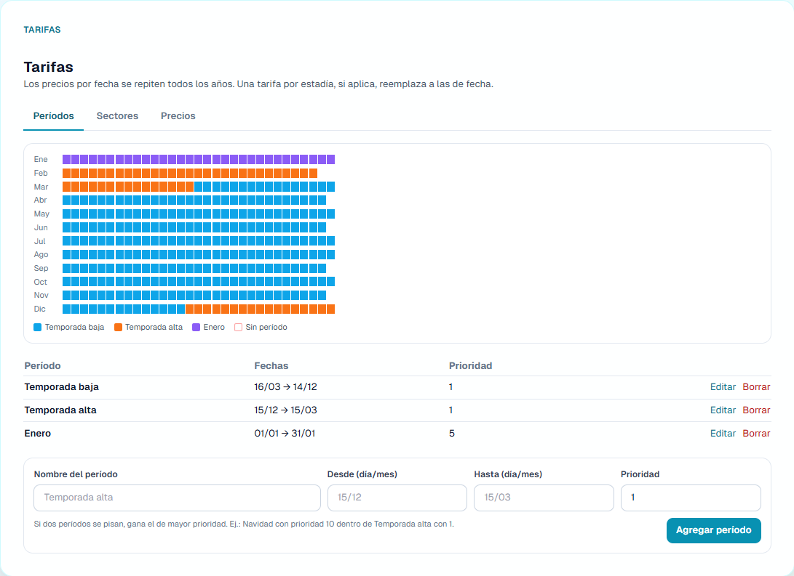
La prioridad resuelve los períodos que se pisan. Si “Enero” (prioridad 5) está dentro de “Temporada alta” (prioridad 1), los días de enero usan el precio de Enero. Dos períodos que se pisan no pueden tener la misma prioridad. La tira del año pinta qué período rige cada día; los días sin período se marcan en rojo: esos días saldrían “Consultar precio”.
Un sector agrupa unidades que se cobran distinto: la Terraza, las carpas con vista al mar, la primera fila de sombrillas. Elegí el Servicio, tocá Nuevo sector, poné el nombre y un color, y tocá las unidades en el plano para sumarlas o sacarlas. Tocá Guardar sector.
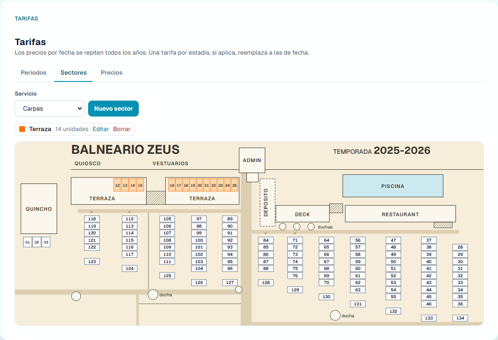
Cada unidad puede estar en un solo sector. En estacionamiento, que no está en el plano, las plazas se eligen de una lista.
En la pestaña Precios, elegí el servicio. La grilla tiene una fila por alcance (Todas las carpas, cada sector y cada unidad con precio propio) y una columna por período. Escribí el precio por día en cada celda: se guarda solo al salir de la celda. Los centavos van con coma (18000,50).
Una celda vacía en un sector significa “usa el precio general”: solo hace falta cargar lo que cambia. Para darle precio propio a una sola unidad, escribí su número en Número de unidad y tocá Agregar unidad. Solo acepta unidades que existen en el plano.
Sirven para las estadías largas: quincena, media temporada o temporada completa. Si la cantidad de días de la reserva entra en el rango, se cobra esta tarifa en lugar de sumar los días.
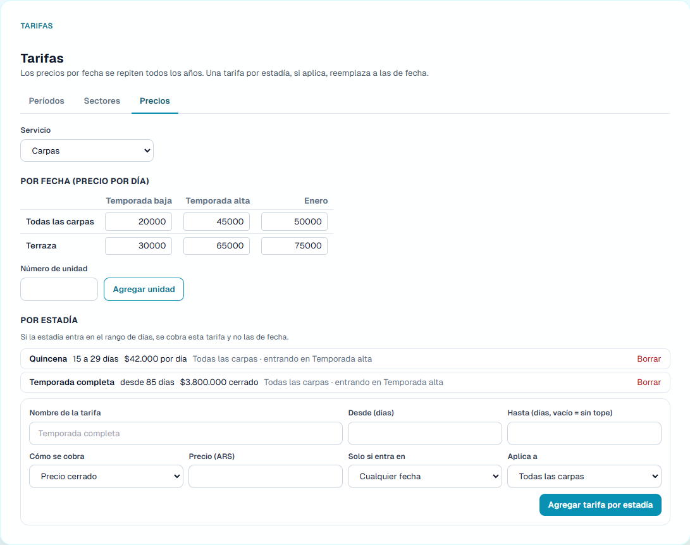
| Qué reserva | Qué cobra el sistema |
|---|---|
| Carpa, 3 días de octubre | 3 × $20.000 (Temporada baja) = $60.000 |
| Carpa del 12/12 al 17/12 | 3 días de baja × $20.000 + 3 días de alta × $45.000 = $195.000 |
| Carpa de la Terraza, 3 días en enero | 3 × $75.000 (precio de la Terraza en Enero) = $225.000 |
| Carpa, 20 días desde el 5/1 | Quincena: 20 × $42.000 = $840.000 |
| Carpa, temporada completa | Precio cerrado: $3.800.000 |
Cuál gana si varias aplican: una tarifa de la unidad gana sobre la del sector, y la del sector sobre la general. Entre dos tarifas por estadía, gana la atada a un período.
En Panel de usuario hay dos pestañas.
Tu email de ingreso. Con Cambiar email y Cambiar contraseña los actualizás; siempre pide la contraseña actual. La contraseña nueva tiene que tener al menos 8 caracteres.
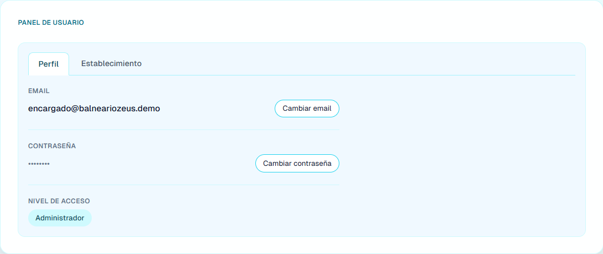
El nombre del balneario, qué servicios tiene y la capacidad de cada uno. La cantidad de carpas (117) y de sombrillas (220) está fijada por el plano del balneario.
Abajo están las Reglas de las reservas:
Tocá Guardar cambios para aplicar. Las reglas nuevas valen para las reservas que se carguen o editen desde ese momento.
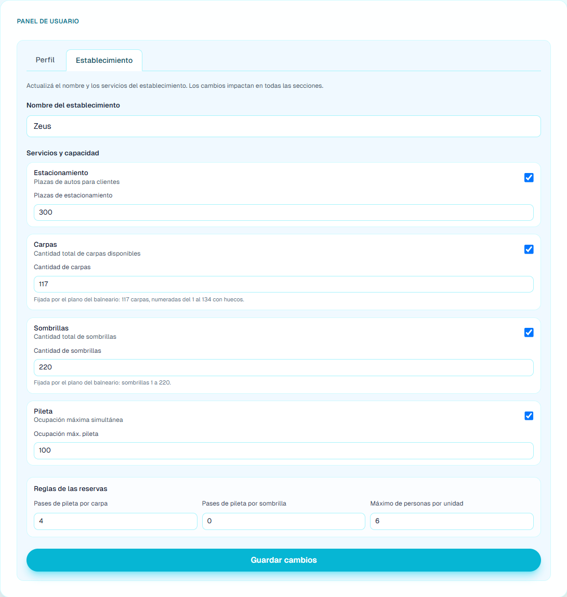
| Qué pasa | Qué hacer |
|---|---|
| No me deja guardar la reserva. | Falta algo y está marcado en rojo: la patente de la cochera, el motivo si cambiaste el precio, una seña mayor que el total, más de 6 personas, o la unidad está ocupada en esas fechas. |
| No me deja tildar Incluye pileta o Incluir estacionamiento. | La reserva necesita un cliente guardado. Elegilo en Buscar cliente guardado o crealo con + Nuevo cliente. |
| No puedo darle el pase de pileta a una persona. | Le faltan el DNI o la edad. Completalos con el lápiz en la lista de personas del detalle. Si ya están los 4 pases asignados, sacale el tilde a otra persona o vendele un pase pago. |
| Vienen 7 personas a una carpa. | El tope es de 6 contando al titular. La séptima no entra en esa carpa: hace falta otra unidad. |
| El cliente quiere pagar todo junto. | Agendá un solo pago desde el detalle de la carpa: se reparte solo entre la carpa, las cocheras y la pileta paga. |
| Moví una carpa y la cochera se movió sola. | Es así: la cochera y la pileta incluidas acompañan a la carpa. Los pases pagos no: el aviso te pide que los revises. |
| Quiero cambiar la cochera incluida de plaza. | Desde Editar en la carpa, o abriendo la cochera: acepta otra plaza y otra patente, pero no otras fechas. |
| Al arrastrar, el tramo se pone rojo. | Hay días ocupados en ese tramo. Elegí otra unidad u otras fechas. |
| El precio dice “Consultar precio”. | Faltan tarifas para esos días o para ese servicio. Cargá el total a mano, o completá los precios en Tarifas → Precios. |
| Cambié una tarifa y una reserva vieja no cambió. | Es así a propósito: la reserva conserva el precio con que se hizo. Solo se recalcula si le cambiás las fechas o la unidad. |
| Me sacó del sistema: “Tu sesión venció”. | Pasó una hora desde que entraste. Volvé a ingresar. Si estabas cargando una reserva, cargala de nuevo. |
| Un cliente viene con otro auto. | Escribí la patente nueva en la reserva: la patente va en cada reserva, no solo en la ficha del cliente. |
| Quiero saber cuánto se cobró hoy en efectivo. | Reportes → Pagos, con la fecha de hoy y el método Efectivo. |
| Quiero ver quién se fue debiendo plata. | Clientes, tildando Solo con deuda de reservas terminadas. |